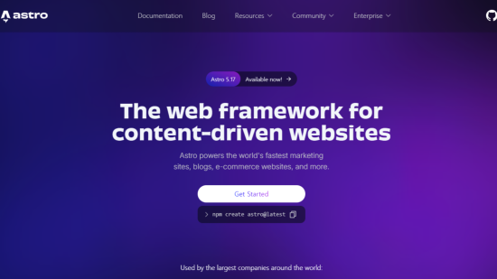

Astro 기반 정적 웹사이트 구축

1. 설치
1.1. 패키지 환경 점검
- node.js v18.17.1 또는 v20.3.0 이상의 버전이 필요
- npm v9.0.0 이상
enduser@Vinus MINGW64 ~ (main)
$ node -v
v24.12.0
enduser@Vinus MINGW64 ~ (main)
$ npm -v
11.6.2
1.2. astro 프로젝트 생성
- uno-forge-hub/agency-landing-page-Astrojs 테마 선정
####### 테마 없이 프로젝트 생성
# enduser@Vinus MINGW64 ~ (main)
# npm create astro@latest www
####### 프로젝트 생성과 테마 설치 동시에 진행
# npm create astro@latest → 최신 버전 Astro 프로젝트 생성 스크립트 실행
# www → 프로젝트가 만들어질 폴더 이름
# -- → npm 옵션과 Astro CLI 옵션을 구분
# --template uno-forge-hub/agency-landing-page-Astrojs → 특정 GitHub 템플릿을 사용
enduser@Vinus MINGW64 ~ (main)
npm create astro@latest www -- --template uno-forge-hub/agency-landing-page-Astrojs
enduser@Vinus MINGW64 ~ (main)
Need to install the following packages:
create-astro@4.13.2
Ok to proceed? (y) y
> npx
> create-astro www --template uno-forge-hub/agency-landing-page-Astrojs
astro Launch sequence initiated.
◼ dir
Using www as project directory
◼ tmpl
Using uno-forge-hub/agency-landing-page-Astrojs as project template
deps Install dependencies?
Yes
git Initialize a new git repository?
No
◼ Sounds good!
You can always run git init manually.
✔ Project initialized!
■ Template copied
■ Dependencies installed
next Liftoff confirmed. Explore your project!
Enter your project directory using cd ./www
Run npm run dev to start the dev server. CTRL+C to stop.
Add frameworks like react or tailwind using astro add.
Stuck? Join us at https://astro.build/chat
####### 의존성 패키지 설치
enduser@Vinus MINGW64 ~ (main)
npm install
1.3. 테스트
enduser@Vinus MINGW64 /d/onedrive/dev
$ cd www
enduser@Vinus MINGW64 /d/onedrive/dev/www
$ npm run dev
> www@0.0.5 dev
> astro dev
▶ Astro collects anonymous usage data.
This information helps us improve Astro.
Run "astro telemetry disable" to opt-out.
https://astro.build/telemetry
15:47:06 [types] Generated 1ms
15:47:06 [content] Syncing content
15:47:06 [content] Synced content
astro v5.7.12 ready in 560 ms
┃ Local http://localhost:4321/
┃ Network use --host to expose
15:47:06 watching for file changes...
update ▶ New version of Astro available: 5.18.0
Run npx @astrojs/upgrade to update
15:47:14 Configuration file updated. Restarting...
15:47:14 [vite] Re-optimizing dependencies because vite config has changed
15:47:14 [content] Syncing content
15:47:14 [content] Synced content
15:47:14 [types] Generated 158ms
15:47:14 [vite] Re-optimizing dependencies because vite config has changed
15:47:25 [200] / 118ms
1.4. 페이지 확인
- 브라우저에서 http://localhost:4321/ 접속
2. 설치 후 디렉터리 구조
my-project/
├─ public/ # 정적 자산 (이미지, 폰트, favicon 등) 빌드없이 그대로 배포
├─ src/ # 실질적 소스코드가 위치
│ ├─ components/ # 재사용 가능한 UI 컴포넌트 (버튼, 헤더 등)
│ ├─ content/ # 구조화된 Markdown/MDX 콘텐츠 (블로그 글, 문서 등)
│ ├─ layouts/ # 페이지 레이아웃 (공통 헤더/푸터)
│ ├─ pages/ # 실제 페이지 (index.astro, about.astro 등)
│ ├─ styles/ # CSS, Tailwind 설정 등
│ └─ utils/ # 재사용 가능한 유틸리티 함수 등 (선택)
├─ package.json # npm 의존성 관리
├─ astro.config.mjs # Astro 프로젝트 설정
├─ tsconfig.json # TypeScript 설정 (선택)
└─ dist/ # 빌드 결과물 (배포용)
3. 명령 일람
####### Installs dependencies
npm install
####### Starts local dev server at localhost:4321
npm run dev
####### Build your production site to ./dist/
npm run build
####### Preview your build locally, before deploying
npm run preview
####### Run CLI commands like astro add, astro check
npm run astro ...
####### Get help using the Astro CLI
npm run astro --help
4. 로컬에서 push
- Astro는 Hugo와 다르게 리빌드시, 빌드 결과가 생성되는 폴더를 초기화하여 .git 이력이 삭제되는 문제가 발생
- 그 결과, Hugo처럼 public 폴더만 git init 하여 gh-pages branch를 생성하여 업로드하는 것이 아니라, Astro 프로젝트 루트를 git init 하고 gh-pages branch를 생성하여 dist 폴더만 업로드 하는 방식을 선택
####### 폴더 초기화(최초 1회만 수행)
$ git init
Initialized empty Git repository in D:/OneDrive/dev/public-re-kr/public/.git/
####### 로컬 디렉터리와 원격저장소 연결(최초 1회만 수행)
$ git remote add origin https://github.com/username/project-site.git
####### 새 브랜치를 생성하고 그 브랜치로 이동(최초 1회만 수행)
$ git checkout -b gh-pages
Switched to a new branch 'gh-pages'
####### 브랜치 변경
$ git switch gh-pages ####### PAD에서는 git switch gh-pages 2>$null || echo ok 명령
####### 빌드
$ npm run build ####### 또는 astro build
####### dist 디렉터리를 스테이징
$ git add dist -f
####### 스테이징한 파일을 커밋
$ git commit -m "Deploy after Edit"
####### --force 옵션시 강제 덮어쓰기 수행(옵션 제거시 변경된 파일만 업데이토)
$ git subtree push --prefix dist origin gh-pages